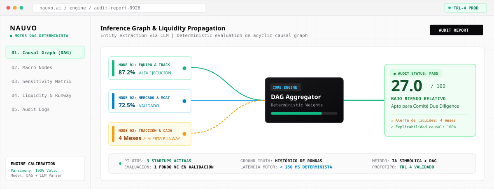

Nauvo: construí un motor de inferencia determinista para evaluar riesgo en startups pre-semilla

Evaluación cualitativa y sesgada de startups pre-semilla. Los LLMs genéricos producían justificaciones plausibles pero matemáticamente incoherentes en flujos de caja y unit economics.
Descarte de modelos monolíticos de caja negra. Separé la extracción de datos del cálculo de riesgo: los LLMs solo extraen y estructuran información desde memorandos y finanzas; la evaluación corre sobre un Grafo Acíclico Dirigido (DAG) determinista donde el mismo dato produce siempre el mismo resultado.
Especificación técnica del motor en Python con propagación jerárquica en 3 macro-nodos (Equipo, Mercado, Runway). Desglose analítico auditable paso a paso con detección automática de alertas de liquidez.
Maduración de tesis de Magíster (TRL 3) a motor funcional validado (TRL 4). Cero deuda de explicabilidad: 3 clientes piloto activos y 1 fondo de Venture Capital en validación comercial (Septiembre 2026).